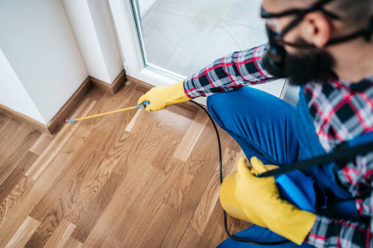

How to Keep Seattle Pests at Bay: Top Prevention Tips for Homeowners
Posted by on 2024-06-05
Seattle is a beautiful city known for its stunning views, vibrant culture, and thriving tech industry. However, like any urban area, Seattle is also home to pests that can cause problems for homeowners. From rodents to insects, these unwanted guests can be a nuisance and even pose health risks.
But fear not! There are steps you can take to keep Seattle pests at bay and protect your home from infestation. Here are some top prevention tips for homeowners:
1. Keep your home clean and tidy: Pests are attracted to clutter and mess, so it's important to keep your living space clean and organized. Regularly vacuum floors, wipe down countertops, and take out the trash to eliminate potential food sources for pests.
2. Seal up entry points: Pests can enter your home through even the tiniest of openings, so be sure to seal up cracks in walls, windows, and doors. Install door sweeps on exterior doors and repair any damaged screens to prevent pests from sneaking in.
3. Store food properly: Keep pantry items in sealed containers to deter pests like ants and rodents from getting into your food supply. Be sure to clean up spills promptly and avoid leaving pet food out overnight.
4. Maintain your yard: Pests often make their way into homes from outdoor areas, so it's important to keep your yard well-maintained. Trim trees and shrubs away from the house, remove standing water sources, and keep firewood stacked away from the foundation of your home.
5. Work with a professional pest control company: If you're dealing with a persistent pest problem or want extra peace of mind, consider hiring a professional pest control company to assess your property and provide ongoing prevention services.
By following these tips and staying vigilant about pest prevention measures, you can help keep Seattle pests at bay and enjoy a pest-free home environment. Remember that early intervention is key when it comes to pest control – don't wait until you have a full-blown infestation on your hands before taking action! With a proactive approach and regular maintenance, you can protect your home from unwanted intruders and preserve its comfort and safety for years to come.